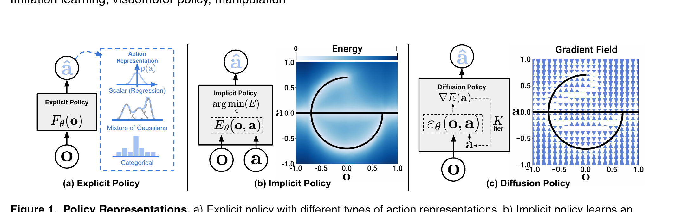
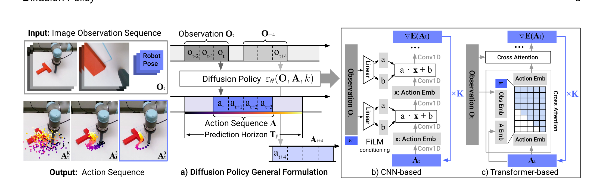
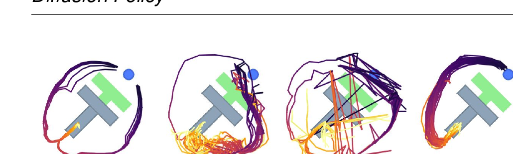
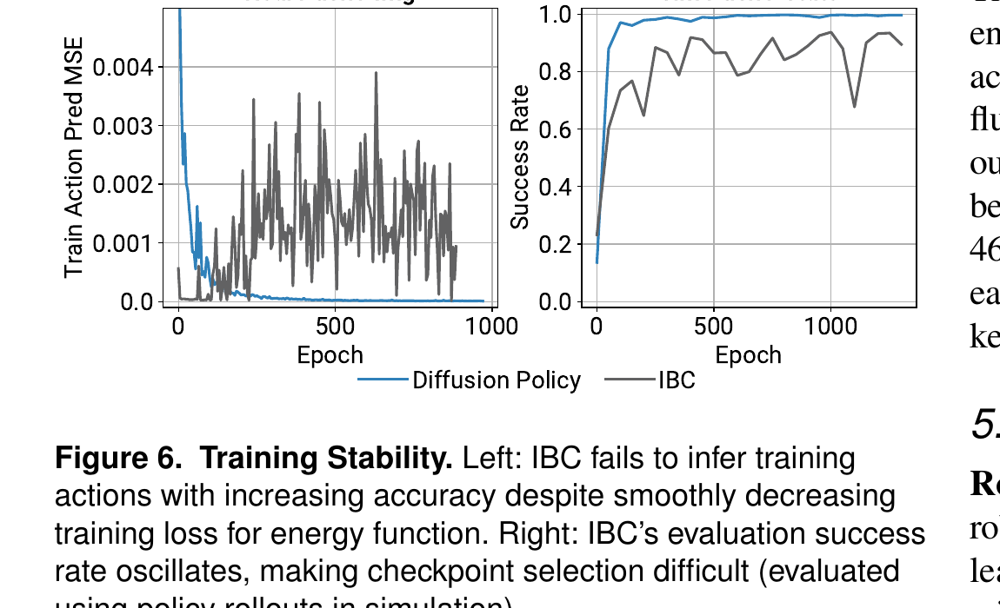
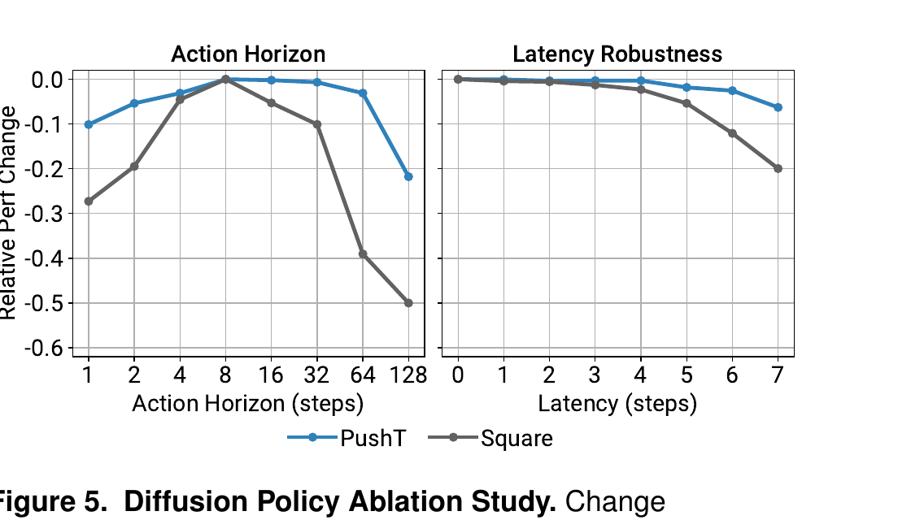

Diffusion Policy: Visuomotor Policy Learning via Action Diffusion
Cheng Chi, Zhenjia Xu, Siyuan Feng, Eric Cousineau, Yilun Du, Benjamin Burchfiel, Russ Tedrake, Shuran Song · Columbia / TRI / MIT · IJRR 2024 (extended from RSS 2023)
如果你已经读过 π₀， 你应该会有一个疑问：π₀ 的 action expert 为什么用 flow matching 生成动作？ 而不是直接 MSE 回归一个动作向量？这篇论文（2023 RSS best paper）就是回答这个问题的原点—— 它第一次系统地把扩散模型搬进机器人策略，证明：
把 "policy(o) → a" 这件事，从"回归"重新建模成 "从噪声里去噪出一个动作序列"，整个机器人模仿学习的基线就被推到了一个新高度—— 15 个任务平均提升 46.9%，并且训练稳定、能表达多模态、能处理 action sequence。 π₀ / Octo / RDT 这一波 VLA，本质上都是把 Diffusion Policy 的"动作头"嫁接到 一个 VLM 后面。
读完这篇你能拿到三件事：(1) 为什么 BC 任务里 MSE 回归会失败； (2) DDPM 怎么改成 conditional policy；(3) 三个工程关键（visual conditioning / action sequence / receding horizon） 是怎么让它真的能在物理机器人上 0.1s 闭环跑起来的。
§1 一句话总览
过去模仿学习把 "状态 → 动作" 当成一个函数来学（像 LSTM-GMM、BC-RNN）。 但人的 demonstration 不是一个函数：同一个状态下，绕开 T 形块从左边走还是右边走都对—— 这叫多模态。MSE 回归在多模态分布上会输出"两条路的平均"，结果就卡死中间。
Diffusion Policy 的解法：把动作分布 p(a|o) 用 DDPM 表达。 训练时学"如何给一段动作加噪 → 预测噪声"；推理时从一段高斯噪声出发， 按 score field 一步步把它"导航"成一段合法动作序列。 分布是 implicit 的，所以左右两条路都能保留。

展开原文 · Abstract 关键句
"Diffusion Policy learns the gradient of the action-distribution score function and iteratively optimizes with respect to this gradient field during inference via a series of stochastic Langevin dynamics steps. We find that the diffusion formulation yields powerful advantages when used for robot policies, including gracefully handling multimodal action distributions, being suitable for high-dimensional action spaces, and exhibiting impressive training stability."
① 在 15 个任务、4 个 benchmark 上，平均成功率提升 46.9%；
② 推理只要 10 步 DDIM，单帧 0.1 秒（3080 GPU），够闭环控制；
③ 在 Block Push 长 horizon 多模态任务上，p4 指标提升 213%（0.32 → 1.00）。
§2 为什么策略学习比"普通监督"难
上一节给出了"diffusion 是答案"——但答案为什么是 diffusion？为什么不是普通 MLP 或 BC-RNN？ 这一节先讲清楚问题：从 demonstration 学动作有三个特性， 让它和普通的"图像分类"完全不是一码事。
| ① 多模态（Multimodal） | 同一个状态下，可以有多种合法动作。绕开 T 块从左走或右走都对。MSE 回归会输出两个动作的平均。 |
| ② 时序相关（Sequential） | 动作之间有强时间依赖。前一步推到这里，下一步只能往这个方向，不是独立同分布。 |
| ③ 高精度（High Precision） | 机器人操作对动作精度要求高。误差 1cm 在视觉分类里没事，但能让一个抓取任务整体失败。 |
假设一个状态 o 对应两个合法动作 a₁ = 左、a₂ = 右。MSE 损失最小化的是
E[(a - μ(o))²]，最优的 μ(o) = (a₁+a₂)/2 = "中间"。
而"中间"在 push-T 这种任务里是非法动作（直直怼上 T 块）。
这就是为什么 BC-RNN 在多模态任务上经常"画饼" / "犹豫" / 卡死。
IBC（Florence 2021）用 EBM 解决了多模态——但训 EBM 要靠 InfoNCE
负采样，归一化常数 Z(o,θ) = ∫ exp(-E(o,a)) da 是 intractable 的。
实际训出来的 IBC 训练损失下降但 success rate 振荡（Fig 6 右）。
Diffusion Policy 就是要绕开这个坑：不学能量本身，只学能量的梯度。
§3 DDPM 怎么变成机器人策略
上一节说"用 diffusion 可以避开 IBC 的坑"。但 DDPM 原本是给图像生成用的（x 是一张图），
怎么改造成 policy？这一节回答两件事：
(a) 朗之万动力学怎么把噪声变成动作，
(b) DDPM 的 loss 怎么改成 conditional 形式 p(a|o)。
读完这节你能写出训练 loss 和推理流程。
3.1 朗之万动力学：去噪 = 沿梯度场下山
DDPM 是一族生成模型， 采样过程被建模成 K 步朗之万动力学（Stochastic Langevin Dynamics）。 从纯高斯噪声 $\mathbf{x}^K$ 出发，每一步都做一次"预测噪声 → 减掉 → 加一点扰动"， K 步之后得到干净样本 $\mathbf{x}^0$。
把 $\mathbf{x}^K$ 想成你被丢在一个有雾的山顶（高斯噪声），目标是走到山谷（合法动作）。 每一步 $\varepsilon_\theta$ 告诉你"当前最陡的下山方向"， $\gamma$ 决定迈多大一步， 末尾那项 $\mathcal{N}(0, \sigma^2 I)$ 是脚滑一下——避免你被困在小坑里， 也是采样能采出多模态分布的原因。
- $\mathbf{x}^k$
- 第 $k$ 步的"被噪声污染"样本——$k$ 越大越接近纯噪声，$k=0$ 是干净数据
- $\varepsilon_\theta(\mathbf{x}^k, k)$
- 噪声预测网络——看着当前样本和当前步数，预测里面有多少噪声。这是整个 DDPM 唯一要训练的东西
- $\alpha,\ \gamma,\ \sigma$
- noise schedule 系数，论文用 Square Cosine Schedule。$\gamma$ 起的是"学习率"作用，$\sigma$ 控制每步注入多少随机性
- $\mathcal{N}(0,\sigma^2 I)$
- 每步追加的高斯扰动——保证采样过程是随机的而不是确定性梯度下降
3.2 一行代数：噪声预测 = 学一个梯度场
上一节给了采样公式，但没说 $\varepsilon_\theta$ 到底在学什么。 论文用一行代数把 Eq. 1 拆开（让 $\sigma = 0$ 暂时忽略随机扰动项）， 就能看清它和经典梯度下降的关系。回忆一下普通梯度下降的更新公式：
- $\mathbf{x}^{k-1}$ ↔ $\mathbf{x}'$
- 下一步位置
- $\gamma$ ↔ $\gamma$
- 步长（学习率）
- $\varepsilon_\theta(\mathbf{x}^k, k)$ ↔ $\nabla E(\mathbf{x})$
- 这就是关键：噪声预测网络扮演的角色，正是某个能量函数的梯度
对照下来，$\varepsilon_\theta(\mathbf{x}, k)$ 实际上就在拟合 $\nabla E(\mathbf{x})$—— 也就是学一个梯度场（也叫 score）。这是连接 DDPM ↔ EBM ↔ score-matching 的核心一步，也是下面要解释"为什么 IBC 不稳、Diffusion 稳"的入口。
EBM 的真实分布是 $p(\mathbf{a}\mid\mathbf{o}) = \exp(-E_\theta(\mathbf{o},\mathbf{a})) / Z(\mathbf{o},\theta)$， 分母 $Z$ 是个对所有动作积分的常数——算不出来。 但只要看 score（log 概率对 $\mathbf{a}$ 的梯度），$Z$ 就消失了：
因为 $Z$ 不依赖 $\mathbf{a}$，第二项恒为 0。 所以 score 等于 $-\nabla_{\mathbf{a}} E_\theta(\mathbf{o},\mathbf{a})$——和 $Z$ 无关。 既然只学 score（即 $\varepsilon_\theta$），就不用估 $Z$，训练自然稳定。 IBC 之所以训练崩，就是因为它非要在分母里算 $Z$。
3.3 训练目标：MSE on noise
上节说 $\varepsilon_\theta$ 在学梯度场，但具体怎么训？ DDPM 的训练其实非常朴素——比 IBC 的对比学习简单一个数量级。
一个干净动作 $\mathbf{a}^0$ 被人偷偷掺进了一团高斯噪声 $\boldsymbol{\varepsilon}^k$， 给你看混合后的 $\mathbf{a}^k$。你要猜回掺进去的那团噪声长啥样。 猜得越准，模型对"什么是干净动作"理解得越好。这就是 DDPM 训练的全部。
训练循环：
- 从数据集采一段干净动作 $\mathbf{a}^0$；
- 随机选一个 denoising step $k \sim \mathrm{Uniform}\{1,\ldots,K\}$；
- 采一团高斯噪声 $\boldsymbol{\varepsilon}^k \sim \mathcal{N}(0, I)$，加到 $\mathbf{a}^0$ 上得到 $\mathbf{a}^k = \mathbf{a}^0 + \boldsymbol{\varepsilon}^k$；
- 让网络看着 $(O_t, \mathbf{a}^k, k)$ 预测 $\boldsymbol{\varepsilon}^k$，loss 是 MSE：
- $\boldsymbol{\varepsilon}^k$
- 真实加上去的那团高斯噪声——这就是 ground truth
- $\varepsilon_\theta(O_t,\ \mathbf{a}^0 + \boldsymbol{\varepsilon}^k,\ k)$
- 网络看着"被污染的样本 + 观察 + 步数"，猜回那团噪声
- $O_t$
- 条件（observation）——视觉/状态特征，告诉模型"在这种环境下应该做什么"
- $\mathrm{MSE}(\cdot, \cdot)$
- 均方误差。和 InfoNCE 不一样，这里只有"猜的噪声 vs 真实噪声"两个量，没有负样本
相比之下，IBC 的 InfoNCE loss 要在分母里堆 $N_\text{neg}$ 个负样本， 每个负样本都要前向跑一遍能量函数。 DDPM 的 MSE 训练只有一个前向 + 一个反向——简单稳定。
展开原文 · §2.3 训练简化为何稳定
"Diffusion Policy and DDPMs sidestep the issue of estimating Z(a, θ) altogether by modeling the score function ... where the noise-prediction network ε_θ(a, o) is approximating the negative of the score function ∇_a log p(a|o), which is independent of the normalization constant Z(o, θ). As a result, neither the inference nor training process of Diffusion Policy involves evaluating Z(o, θ), thus making Diffusion Policy training more stable."
§4 三个工程关键：让它真能上机器人
上一节给出了"diffusion 头"在数学上为什么稳。但从一个能 work 的图像生成 DDPM 到一个能在机器人上闭环跑的 policy，论文做了三件关键工程改造。 这三件事缺一不可——这也是你读 π₀ / Octo / RDT 时会反复看到的同一组设计选择， 它们的根都在这一节。
4.1 视觉作为条件，不作为联合分布
原本的 Diffuser（Janner 2022）做 plan diffusion，输入输出都是 (s_t, a_t)——
建的是联合分布 p(A, S)。
这意味着推理时视觉特征也要每一步去噪，慢得离谱。
Diffusion Policy 的关键改动：把 $O_t$ 当成条件—— 只建 $p(A_t \mid O_t)$。 视觉编码器对每一帧观察只前向一次， 然后把得到的 feature 注入每一步的 $\varepsilon_\theta$。 推理速度从"K 次视觉编码"降到"1 次视觉编码 + K 次 action 去噪"。
- $\mathbf{x} \to A_t$
- 被去噪的对象从"图像"换成动作序列 $A_t = (\mathbf{a}_t, \mathbf{a}_{t+1}, \ldots, \mathbf{a}_{t+T_p-1})$
- $\varepsilon_\theta(\cdot, k) \to \varepsilon_\theta(O_t, \cdot, k)$
- 噪声预测网络多接一个条件 $O_t$（视觉+状态特征），决定"在这个环境下该往哪去噪"
训练 loss 同步改成动作序列版本：
注意：Eq. 4 是单步动作 $\mathbf{a}$ 的训练 loss，Eq. 6 把它升级到动作序列 $A_t$。 其他全保持原样——这就是为什么 Diffusion Policy 能原封不动地继承 DDPM 的训练稳定性， 只在输入/输出维度上做了机器人特化。
4.2 输出动作序列，不是单步
每次推理预测一段长度为 T_p 的动作序列 A_t = (a_t, a_{t+1}, ..., a_{t+T_p-1})，
而不是单个 a_t。这件事的意义有三层：
4.3 滚动时域控制（Receding Horizon Control）
预测一段 T_p 步动作，但只真正执行其中前 T_a 步，然后用最新的观察重新预测。 这是经典 MPC（模型预测控制）的思路。
T_a 太小 → 等同于单步，浪费了序列预测的好处；
T_a 太大 → 不能及时反应环境变化，动作"陈旧"；
实验最佳：T_a = 8 步左右（Fig 5 左）。
§5 网络架构 · 一张图看懂
上一节把"为什么这么设计"讲清楚了——这一节讲具体的神经网络长什么样。 论文同时给了 CNN-based 和 Transformer-based 两个版本，二者公用 §4 的训练目标， 只在"动作 + 时间步 + 观察"怎么融合上不同。 读完你能在 Fig 2 上指出每根箭头是什么。

第 1 步：观察输入（只跑 1 次）
当前时刻 t，拿过去 T_o=2 帧的图像 + 机器人 pose，喂进视觉编码器。注意：这一步在整个 K 次去噪中只做一次，因为 O_t 是条件而非生成对象。
第 2 步：拿到条件向量 O_t
把所有视觉特征和机器人 pose concat 成一个向量。这个向量在接下来的 K 次去噪里都不会变。
第 3 步：从高斯噪声起步
采一个 A_t^K ~ 𝒩(0, I)——一段长度 T_p=16 的"纯噪声动作序列"。我们的目标是把它一步步导成合法动作。
第 4 步：K 次迭代去噪
每一步喂 (O_t, A_t^k, k) 进 ε_θ，得到该步的"梯度"，按式(4) 更新：A_t^(k-1) = α·(A_t^k − γ·ε_θ) + 高斯扰动。论文训练 100 步、推理 DDIM 加速到 10 步。
第 5 步：拿到 A_t^0，执行前 T_a=8 步
K 步降噪后得到合法动作序列 A_t^0。机器人执行前 T_a=8 步，然后回到第 1 步用最新的观察重新启动整个流程。这就是 receding horizon。
5.2 CNN 版本：FiLM 条件 + 时序 1D 卷积
基础结构是 Janner 2022 Diffuser 的 1D temporal CNN。 论文做了三个修改：
- 只建 conditional
p(A | O)，用 FiLM 把 O_t 注入每一层卷积； - 不预测 concat 的 (obs, action)，只预测 action；
- 去掉 inpainting 形式的 goal conditioning（和 receding horizon 不兼容）；
1D 卷积的 inductive bias 偏好低频信号（Tancik 2020）。 在 velocity control / 高频抖动任务上会 over-smoothing——预测的动作"太平滑"跟不上目标变化。 这是论文为什么又做了 transformer 版的根本原因。
5.3 Transformer 版本：cross-attention 注入
基于 minGPT 风格 decoder：
- Input tokens：T_p 个 noisy action embedding + 1 个 sinusoidal 表达 step k 的 token；
- Self-attention：causal mask 保证每个 action token 只看到前面的；
- Cross-attention：每层把 O_t（经过共享 MLP 投影）当作 K/V 注入；
- Output：每个 token 位置预测对应那一步的 ε_θ。
如果你已经熟悉 π₀：π₀ 的 action expert = 一个独立的小 transformer， 通过 cross-attention 从主 VLM 那里获取观察上下文，输出一段动作序列。 这跟 Diffusion Policy 的 transformer 版是同一个想法—— 只是 π₀ 把 ε_θ 换成 flow vector field（flow matching）、 把 O_t 换成 PaliGemma 的视觉语言特征。骨架完全一样。
5.4 视觉编码器：标准 ResNet-18，但有三个细节
- 用 spatial softmax pooling 替代 global average pooling（保留空间位置信息）；
- 用 GroupNorm 替代 BatchNorm（DDPM 训练常用 EMA，BN 不稳定）；
- 多个相机各自独立 encoder，特征 concat 之后再喂给 ε_θ；
- 视觉编码器和 diffusion 网络端到端联合训练（论文实测：finetune > frozen，from-scratch ≈ pretrained）。
§6 它好在哪？
到目前为止论文讲了"是什么"和"怎么做"。这一节讲"为什么 work"—— 把 Diffusion Policy 的四个独有性质逐一拆开来用图证明： (a) 多模态、(b) 适配位置控制、(c) 训练稳定、(d) action horizon 调起来不挑。 每一项都有一张图作证据，看完你就知道它在哪些场景下比 BC-RNN / IBC / BET 强、为什么强。
6.1 多模态：左右两条路都能保留

6.2 适配位置控制（不是速度控制）
多数 BC 方法（BC-RNN / BET / IBC）必须用 velocity control—— 因为 position control 多模态更明显，它们扛不住。 Diffusion Policy 反过来：position control 比 velocity control 平均提升更大（Fig 4）。 原因有两条：
- position control 对多模态更敏感，但 Diffusion Policy 本来就擅长多模态——劣势消失；
- position control 没有累积误差（velocity 要积分），更适合动作序列预测，下一段可以从准确的目标位置 warm-start。
6.3 训练稳定 vs IBC 的振荡

6.4 Action horizon 不挑、对延迟鲁棒

§7 实验结果（一句话总结即可）
前面讲清了"为什么"——这里给"做到了多少"的数字。Diffusion Policy 的实验跨度极广： 15 个仿真任务（Robomimic / Push-T / BlockPush / Franka Kitchen）+ 4 个真实机器人任务（Push-T / 6DoF Pour / Spread / Mug Flip）+ 3 个双臂任务（Egg Beater / Mat Unrolling / Shirt Folding）。 这是当年 BC 领域最大规模的对照实验之一。
| 仿真总成绩（Tab 1, 2, 4） | 15 个任务平均成功率比 best baseline 提升 46.9%。所有任务都赢。 |
| 多模态长 horizon（Block Push p4） | 从 LSTM-GMM 0.34 → Diffusion Policy 0.99。这是 213% 提升。 |
| 真实 Push-T | IoU 0.84（接近人类 0.95），succ rate 1.00。LSTM-GMM 仅 0.20。 |
| 6DoF Mug Flip | 20 次试验 18 次成功（90%）。LSTM-GMM 0%——根本无法对齐 mug。 |
| Bimanual Shirt Folding | 9 步长流程 75% 成功率，284 个 demos。 |
| 视觉 encoder 消融 | end-to-end 训练 ResNet-18 from scratch ≈ pretrained finetune；frozen pretrained 远差。说明 BC 任务需要"任务相关的视觉表征"，pretrained 做 frozen 不够。 |
| 架构选择建议 | 大多数任务从 CNN-based 开始；高频/velocity 任务用 Transformer。 |
① 仍然继承 BC 的限制：demo 不好就学不好；可以扩展到 RL（后续工作）。
② 计算成本和推理延迟比 LSTM-GMM 高，对超高频控制任务（如 1kHz）还不够；
未来可以用 consistency model / 新 noise schedule 进一步加速。
§8 ★ 与 π₀ / VLA 的关系
读完前面，你应该有一个直觉：Diffusion Policy 是 π₀ 的 action expert 的"前身"。 这一节把两者放一起看，让你彻底理清"diffusion / flow → action"这条技术路线的传承。
| 组件 | Diffusion Policy (2023) | π₀ (2024) |
| 视觉/语言条件 | ResNet-18 多相机特征 concat，从头训 | PaliGemma（SigLIP + Gemma）预训练 VLM 特征 |
| 动作生成头 | 独立 transformer / 1D CNN，cross-attn 接收观察 | 独立 action expert transformer，block-wise causal attn 看 VLM |
| 生成范式 | DDPM（学 score / 噪声预测） | 流匹配（学 vector field，本质是 DDPM 的连续时间版） |
| 训练 loss | MSE on ε | MSE on velocity field（同样是 MSE，没有归一化常数问题） |
| 动作输出 | T_p=16 步 action chunk | action chunk（同样的 receding horizon 思路） |
| 推理 | DDIM 10 步 | flow matching 通常 4-10 步 ODE 积分 |
π₀ = (PaliGemma 视觉语言主干) + (Diffusion Policy 风格的动作生成头，loss 换成 flow matching)。
这一篇是"动作头"的奠基；π₀ 是把它接到大脑（VLM）后面的成熟产品。
读完这篇你再回头看 π₀ 的 action expert 设计——所有疑问都消失了。
因为 Diffusion / Flow 同时解决了 BC 的三个老问题——多模态、训练稳定、序列预测—— 而且规模化能力强（高维输出）。这是 VLM 对接动作时唯一不需要重新发明轮子的方案。 Octo / RDT / RT-2 / OpenVLA 各有取舍，但"用生成模型生成动作"这一招几乎是共识。
下一步该读什么
BC 不是函数学习，是分布学习。 Diffusion Policy 把这件事做对了——通过学 score 而不是学 action。 后面的 π₀ / Octo 都是站在这个肩膀上。